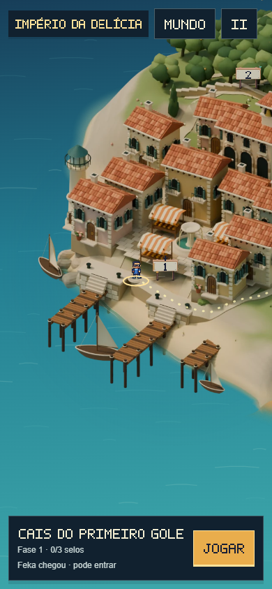
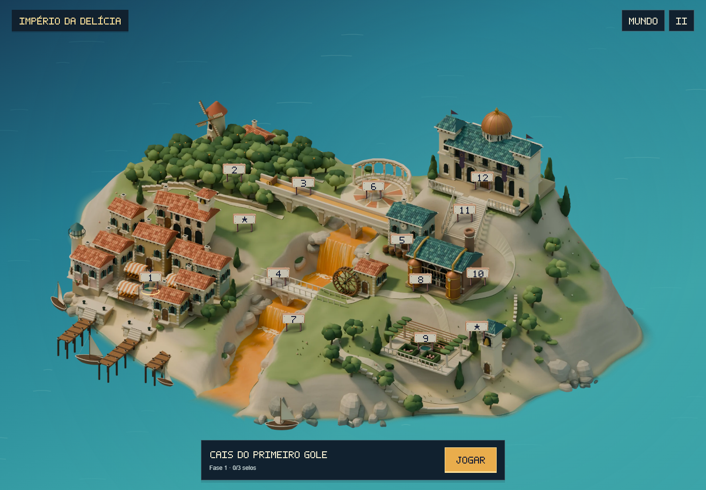

Super Feka Gaps World · revisão de 10/10/2026
Feka percorre o Império da Delícia
14 paradas ligadas ao sistema de viagens do World, com caminhada pelos caminhos da ilha, chegada antes da entrada na fase e retorno ao ponto jogado. Câmera, placas, sprite e HUD compartilham a apresentação do mapa principal.
Captura do percurso no jogo. Selecionar marca o destino; entrar na fase exige uma nova confirmação após a chegada.
Chegadas revisadas
Enquadramento no celular

Comparar com o seletor anterior
Antes, as placas apenas alteravam a seleção; não havia percurso do personagem dentro do Império.
